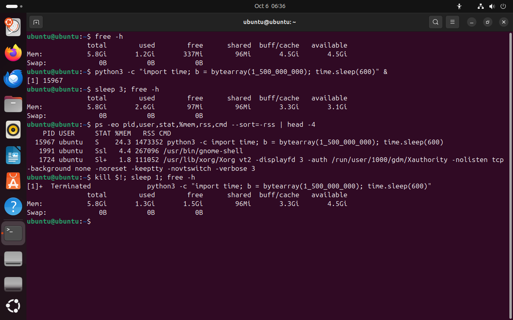

Часть 6 из 7
Порядок действий и postmortem
В этой части соберём инструменты в порядок действий при зависании, разберём его на процессе, который занял память, и научимся записывать краткий отчёт об инциденте.
6.1 Порядок действий
Во время инцидента легко начать завершать всё подряд. Так теряют и улики, и нужные процессы. Поэтому действуют по одному порядку, как врач скорой помощи: сначала осмотр, потом помощь, потом запись в карту.
- 1Записать симптом. Что не так, с какого времени, чем это измерено: время ответа в журнале, нагрузка в
uptime. - 2Посмотреть систему целиком.
uptime,free -h,top: чего не хватает — процессора или памяти. - 3Найти виновника.
ps -eo … --sort=-%cpuили--sort=-rss, затемpstree -s -p PID: кто запустил процесс и есть ли у него потомки. - 4Смягчить. Если процесс нужен, понизить ему приоритет
renice -n 19или приостановитьkill -STOP. Своё задание в терминале можно остановить Ctrl+Z и потом продолжить в фоне командойbg. - 5Устранить. Если процесс не нужен или завис:
kill, несколько секунд ожидания, при отказеkill -9. Проверить, не остались ли потомки, и убрать то, что процесс оставил после себя: блокировки, временные файлы. - 6Проверить. Повторить измерение из шага 1 и убедиться, что симптом пропал.
- 7Записать postmortem.
Смягчение стоит отдельным шагом перед устранением. Процесс может делать полезную работу, например строить отчёт для бухгалтерии. Понизив ему приоритет, вы возвращаете скорость остальным и не теряете его работу.
6.2 Процесс занял память
Когда процесс забирает память, система тормозит иначе, чем при занятом процессоре. Ядро вытесняет данные на диск в раздел подкачки, и любая программа ждёт, пока её данные вернутся с диска. Если память кончается совсем, ядро завершает самый крупный процесс сигналом KILL. Этот механизм называется OOM killer, от out of memory — «память кончилась». В журнале ядра остаётся строка Out of memory: Killed process.
В опыте программа на Python займёт 1,5 ГБ и уснёт. Пройдём по шагам порядка: память до, память после, поиск по столбцу rss, завершение и повторное измерение.
free -h# дочто делает
Что делает команда. Выводит, сколько памяти всего, занято, свободно и доступно программам, в удобных единицах.
По частям:
free- вывести сведения о памяти
-h- показывать размеры в удобных единицах: Ki, Mi, Gi
python3 -c "import time; b = bytearray(1_500_000_000); time.sleep(600)" &# занимает 1,5 ГБчто делает
Что делает команда. Запускает в фоне программу на Python, которая занимает 1,5 миллиарда байт памяти и спит 10 минут.
По частям:
python3- запустить интерпретатор Python
-c "import time; b = bytearray(1_500_000_000); time.sleep(600)"- выполнить программу из строки "import time; b = bytearray(1_500_000_000); time.sleep(600)"
&- запустить команду слева в фоне и сразу продолжить
sleep 3; free -h# послечто делает
Что делает команда. Ждёт три секунды и выводит память.
По частям:
sleep- ничего не делать указанное число секунд
3- сколько секунд
;- разделитель: выполнить следующую команду после этой
free- вывести сведения о памяти
-h- показывать размеры в удобных единицах: Ki, Mi, Gi
ps -eo pid,user,stat,%mem,rss,cmd --sort=-rss | head -4# самые большие по памятичто делает
Что делает команда. Выводит все процессы, отсортированные по занятой памяти, и оставляет три первые строки.
По частям:
ps- вывести сведения о процессах
-eo pid,user,stat,%mem,rss,cmd- -e — все процессы системы; -o — выводить столбцы pid,user,stat,%mem,rss,cmd
--sort=-rss- сортировать по занятой памяти, минус — по убыванию
|- передать вывод левой команды на вход следующей
head- оставить только первые строки
-4- сколько первых строк оставить: 4
kill $!; sleep 1; free -h# завершить и проверитьчто делает
Что делает команда. Посылает TERM последнему фоновому процессу, ждёт секунду и выводит память.
По частям:
kill- послать процессу сигнал
$!- какому процессу, PID последнего процесса, запущенного в фоне
;- разделитель: выполнить следующую команду после этой
sleep- ничего не делать указанное число секунд
1- сколько секунд
;- разделитель: выполнить следующую команду после этой
free- вывести сведения о памяти
-h- показывать размеры в удобных единицах: Ki, Mi, Gi
- 1до: доступно 4,5 ГиБ
- 2во время: 3,1 ГиБ
- 3PID процесса, занявшего память
- 424 % памяти, RSS 1 473 352 КБ
- 5после завершения снова 4,5 ГиБ


Весь снимок ↗Память до запуска, во время работы и после завершения процесса python3.
Что показывает снимок. До запуска доступно 4,5 ГиБ, во время работы python3 — 3,1 ГиБ. ps с сортировкой по rss поставил python3 PID 15967 первым: 24,3 % памяти, 1 473 352 КБ. После kill доступно снова 4,5 ГиБ.
Где это пригодится. Если память кончается и система вытесняет данные на диск, виновника ищут по ps --sort=-rss. После завершения процесса память сразу возвращается системе.
6.3 Postmortem
Слово пришло из медицины, где так называют вскрытие для выяснения причины. В ИТ так называют разбор после сбоя. Postmortem пишут коротко и по фактам: время, команды, числа. Через месяц по нему должно быть понятно, что произошло, даже тому, кто в инциденте не участвовал.
| Раздел | Что писать | Пример по опыту с памятью |
|---|---|---|
| Симптом | что заметили, когда, как измерили | 06:36 доступная память упала с 4,5 до 3,1 ГиБ |
| Причина | какой процесс и почему | python3 PID 15967 занял 1,5 ГБ и не освобождал память |
| Действия | команды по порядку и их результат | ps --sort=-rss нашёл процесс; kill завершил его; free -h: 4,5 ГиБ доступно |
| Профилактика | что изменить, чтобы не повторилось | измерять пиковую память программ /usr/bin/time до запуска на сервере |
Без раздела «Профилактика» инцидент повторится: причина останется на месте. Хорошая мера проверяема: «запускать отчёт с nice 19», «ограничить отчёт одним процессом». Мера «быть внимательнее» проверить нельзя.
Итоги части 6
- Порядок при зависании: симптом, система целиком, виновник, смягчить, устранить, проверить, записать.
- Смягчить —
reniceилиkill -STOP; устранить — TERM, ожидание, KILL, уборка за процессом. - Процесс, занявший память, ищут по
ps --sort=-rss; при нехватке памяти ядро снимает крупный процесс KILL. - Postmortem: симптом, причина, действия, профилактика — по фактам и без поиска виноватых.
В отчётСнимок с памятью и postmortem из четырёх разделов по этому опыту.